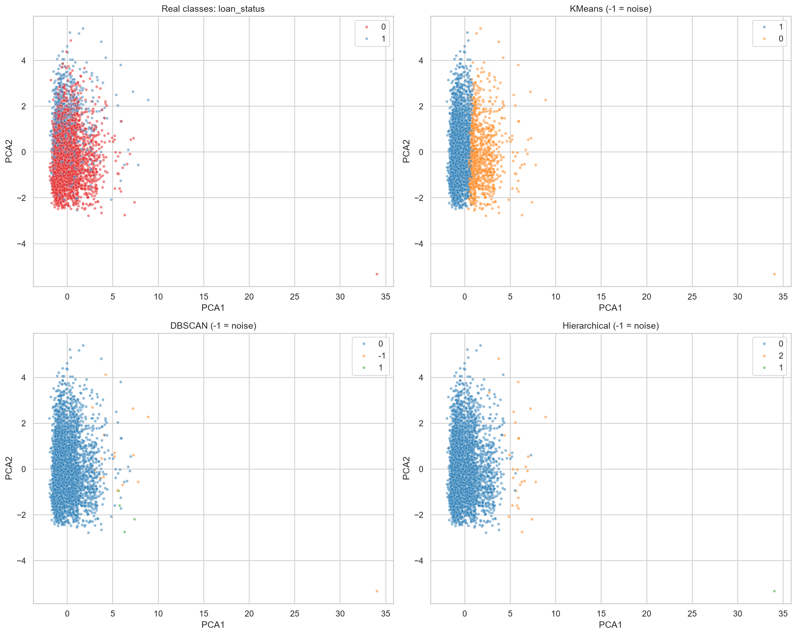
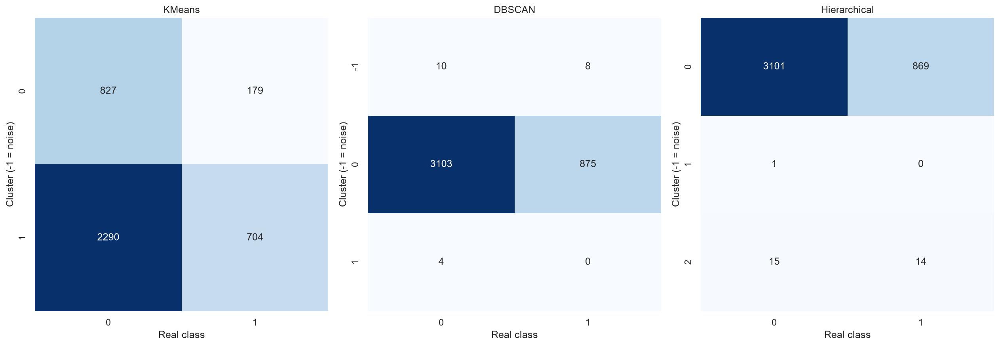
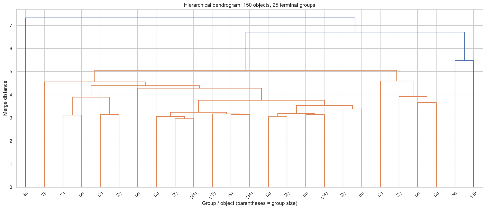

После очистки: 28501 строк. Все методы сравниваются на одинаковой случайной выборке из 4000 строк. loan_status исключён из признаков и использован только для оценки.
| method | clusters | coverage | noise_rows | silhouette | ARI | AMI | homogeneity | completeness |
|---|---|---|---|---|---|---|---|---|
| KMeans | 2 | 1.0 | 0 | 0.19951888476403526 | -0.024042442033367542 | 0.003166659773166214 | 0.003511270013906334 | 0.0032863808518839846 |
| DBSCAN | 2 | 0.9955 | 18 | 0.49827936821028523 | 0.005011329817932747 | 0.0018480251365370502 | 0.0015248681742735676 | 0.021926688583069502 |
| Hierarchical | 3 | 1.0 | 0 | 0.5162407801090124 | 0.011713238842198477 | 0.0035387437021334508 | 0.0024139284154920866 | 0.028150354169563765 |
Silhouette оценивает разделённость групп; шум DBSCAN исключён из него. Coverage — доля объектов без шума. ARI и AMI сравнивают разбиения независимо от номеров кластеров: близость к нулю означает слабое соответствие реальным классам. В сравнении классов шум −1 учитывается как отдельная группа.
{
"KMeans": {
"n_clusters": 2
},
"DBSCAN": {
"eps": 3.0,
"min_samples": 3
},
"Hierarchical": {
"n_clusters": 3,
"linkage": "average"
}
}K-средних выделяет более старших заёмщиков с длинной кредитной историей и более молодых. Доля дефолтов в группах: 17,8% и 23,5%. DBSCAN помещает 3978 объектов в основную группу, 4 — в малую, 18 считает шумом. Иерархический метод выделяет основную группу из 3970 объектов, группу из 29 и отдельную аномальную запись с возрастом 144 года и доходом 6 млн. Высокий silhouette последних двух методов отражает отделение малых необычных групп. Все методы имеют ARI около нуля и не воспроизводят классы дефолта.
Вывод относится к сохранённому запуску (seed=42). При пересчёте с изменёнными данными ориентируйтесь на обновлённые таблицы. PCA сохраняет около 40% дисперсии; на графиках показана проекция, а модели обучались на всех 26 преобразованных признаках. Дендрограмма иллюстрирует отдельную подвыборку из 150 объектов.



| cluster | method | person_age | person_income | person_emp_length | loan_amnt | loan_int_rate | loan_percent_income | cb_person_cred_hist_length | rows | default_rate | person_home_ownership_mode | loan_intent_mode | loan_grade_mode | cb_person_default_on_file_mode |
|---|---|---|---|---|---|---|---|---|---|---|---|---|---|---|
| 0 | KMeans | 35.06958250497018 | 90778.99204771372 | 7.613320079522863 | 10765.805168986084 | 10.781063618290258 | 0.15626242544731608 | 10.824055666003977 | 1006 | 0.1779324055666004 | MORTGAGE | MEDICAL | A | N |
| 1 | KMeans | 25.09819639278557 | 60469.86773547094 | 3.963927855711423 | 9004.40046760187 | 11.047862391449566 | 0.16905811623246494 | 4.061122244488978 | 2994 | 0.23513694054776219 | RENT | EDUCATION | A | N |
| -1 | DBSCAN | 49.333333333333336 | 716993.8333333334 | 11.944444444444445 | 19041.666666666668 | 14.047777777777776 | 0.11499999999999999 | 15.166666666666666 | 18 | 0.4444444444444444 | MORTGAGE | MEDICAL | B | N |
| 0 | DBSCAN | 27.479889391654098 | 65174.09778783308 | 4.835847159376571 | 9409.33257918552 | 10.969864253393666 | 0.16612870789341377 | 5.70211161387632 | 3978 | 0.2199597787833082 | RENT | EDUCATION | A | N |
| 1 | DBSCAN | 55.25 | 50500.0 | 18.75 | 4125.0 | 8.0175 | 0.1075 | 23.0 | 4 | 0.0 | MORTGAGE | PERSONAL | A | N |
| 0 | Hierarchical | 27.36977329974811 | 66659.87405541561 | 4.866498740554156 | 9438.224181360201 | 10.974239294710328 | 0.16557934508816122 | 5.623425692695214 | 3970 | 0.21889168765743072 | RENT | EDUCATION | A | N |
| 1 | Hierarchical | 144.0 | 6000000.0 | 12.0 | 5000.0 | 12.73 | 0.0 | 25.0 | 1 | 0.0 | MORTGAGE | PERSONAL | C | N |
| 2 | Hierarchical | 55.93103448275862 | 59681.03448275862 | 6.724137931034483 | 10856.034482758621 | 11.813448275862068 | 0.2072413793103448 | 24.06896551724138 | 29 | 0.4827586206896552 | RENT | PERSONAL | D | N |